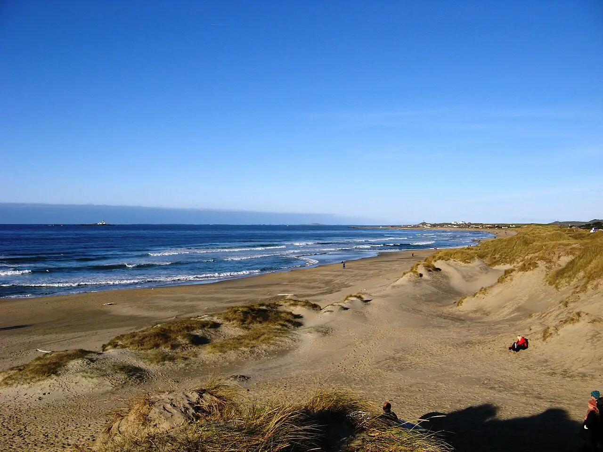

Borestranda
Jæren, Norvège · surf, bodyboard, baignade

Longue plage de sable fin de Jæren, au sud de Stavanger, bordée de dunes et ouverte sur la mer du Nord. C’est l’un des berceaux du surf norvégien, avec des bancs de sable qui marchent surtout d’automne au printemps.
- Lieu
- Jæren, Norvège
- Niveau
- Intermédiaire
- Activités
- surf, bodyboard, baignade
- Type d'eau
- Mer / océan
- Coordonnées
- 58.80, 5.55 (position approximative du secteur)
Dangers à connaître
- Eau froide toute l’année : combinaison épaisse indispensable.
- Courants d’arrachement quand la houle grossit, surtout près de l’embouchure de la Figgjo.
Le conseil d'Ocean Buddy
Débute avec une école locale par petite houle et garde une cagoule et des chaussons dans le coffre : même l’été, l’eau reste fraîche.
Ouvrir dans Ocean Buddy Télécharger sur l'App Store
Source : Fiche Ocean Buddy · septembre 2026 · à vérifier localement.